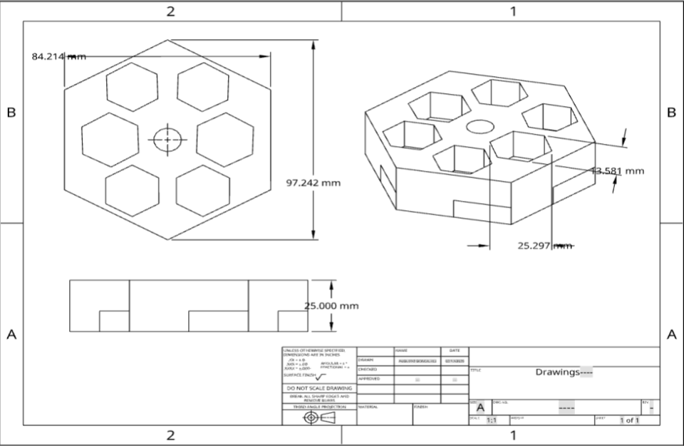
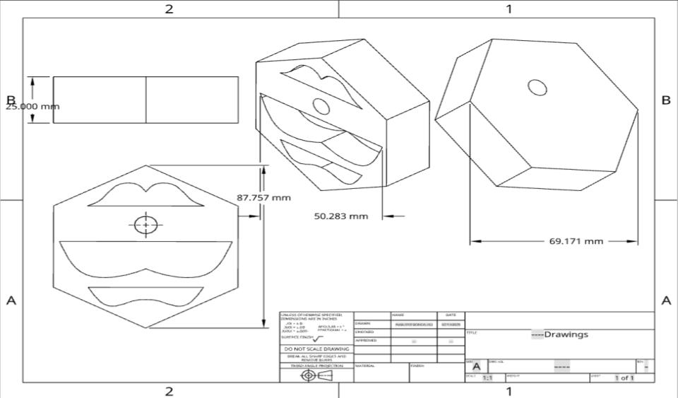
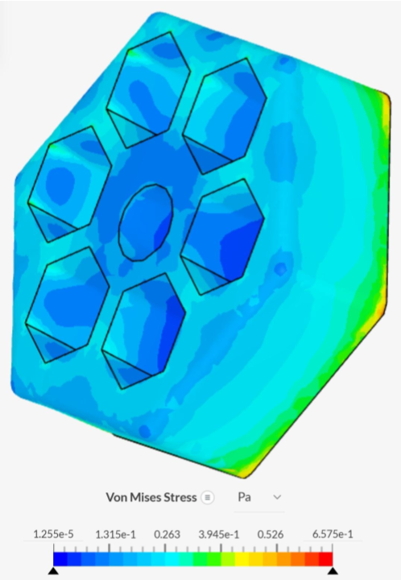
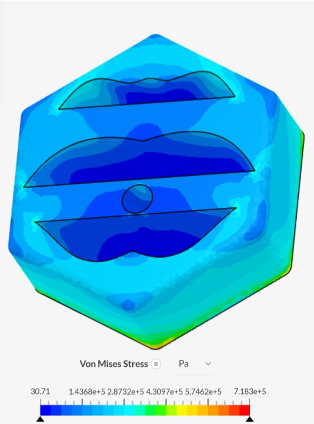
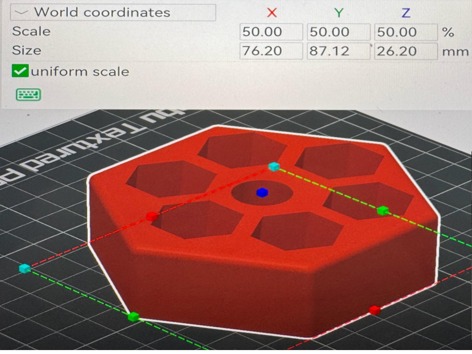
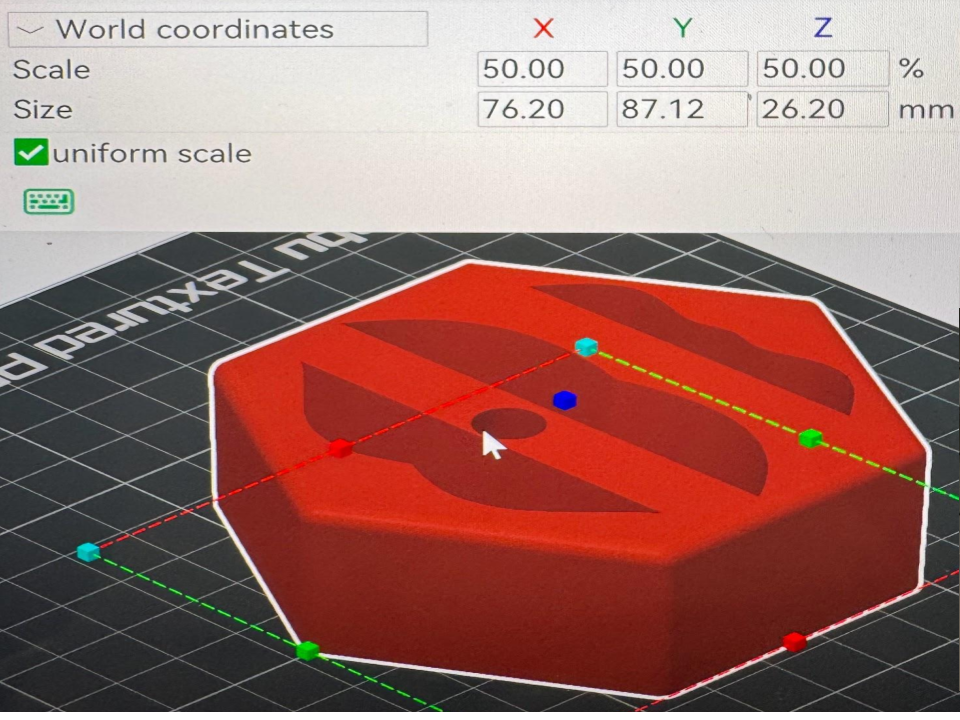

The Living Seawall
How We Can Give Oceanlife New Homes
Home: Return to the home page
Research: What went into making this seawall
Math: The math that was involved in our data collection
Final Results: What we learned
CONSTRUCTION





